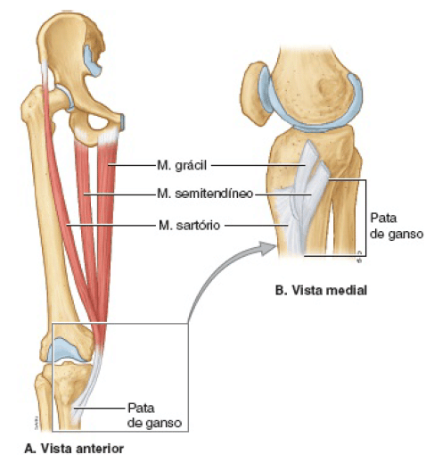

Do latim (pes anserinus) é um conjunto de tendões de músculos da coxa que se inserem proximalmente na tíbia, na região superior da face medial desse osso.
É formada pelos tendões dos músculos:
Sartório, grácil e semitendíneo, que participam da rotação medial, ou interna do joelho.
A denominação “pata de ganso” é em virtude da estrutura assemelhar-se a membrana natatória do ganso.
Essa musculatura tem a função primária de promover a flexão do joelho, tendo influência secundária na rotação interna da tíbia, e protegendo contra o estresse em rotação e em valgo.

MOORE: Keith L. Anatomia orientada para a clínica. 7 ed. Rio de Janeiro: Guanabara Koogan, 2014.
NETTER: Frank H. Netter Atlas De Anatomia Humana. 7 ed. Rio de Janeiro, Elsevier, 2018.